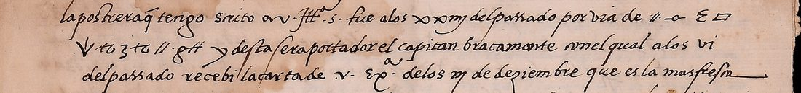
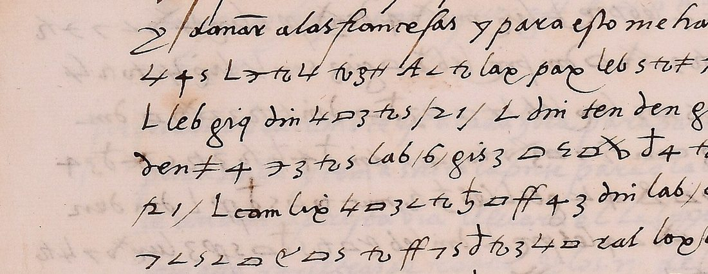

At a glanceCiphertext-only break · complete
- The letter
- Lope de Soria, Charles V’s ambassador in Genoa, to Charles de Lannoy, prince of Sulmona and viceroy of Naples, who was then negotiating a truce with Clement VII. Genoa, 7 March 1527; four leaves (cc. 9–12, five pages carry cipher), about a hundred lines of cipher among the clear text.
- Where
- Modena, Biblioteca Estense Universitaria, Autografoteca Campori, Lettera L, “Lope de Soria”, cc. 9–12, catalogued as “Lettera parzialmente cifrata”. No decipherment on the leaves; not on DECODE.
- The cipher
- About fifty single signs for letters, a few of them standing for two values, and 61 three-letter code groups written in Latin letters (dri que, leb de, fip galeras, pre Su Magestad), used for words and also for syllables. It is not Soria’s cipher with the emperor, nor Lannoy’s.
- How the key was recovered
- From the ciphertext alone. A simulated-annealing solver, first tested on a control text enciphered the same way, found the letter signs: its top runs agree on every sign. The code groups were then valued from the decoded context.
- What it says
- The doge and Commune will arm galleys if the emperor pays half, and want the six imperial galleys at Naples to join the nine at Genoa: fifteen together “sin duda romperian las de Francia”. A few citizens are talking with the Pope about neutrality. The truce under negotiation would leave Savona and the riviera to France.
- Still open
- 14 code groups that occur once or twice (places, owners of galleys, rare words), a blotted sign and the faded last line of f. 9v, and a few doubtful words.
01 The letter
The four leaves (cc. 9–12) hold one letter, signed at Genoa “a vij de março M.D.xxvij” and addressed “Ill.mo y Ex.mo Señor”. It closes “De V. Ill.ma y Ex.ma S. el mas cierto servidor que sus manos besa”; a later hand wrote “Lope de Soria” on the leaf. The recipient is the viceroy of Naples, Charles de Lannoy, whom the letter calls Vuestra Excelencia. Captain Bracamonte, who carries it, sailed for Sicily in a carrack. Cipher runs through the clear text in five places:
| side | clear text | cipher | tokens |
|---|---|---|---|
| 9r | Soria’s last letter, of 23 February; saltpetre for the galleys; powder sent to Bourbon near Piacenza; the saltpetre convoy taken at the mouth of the Ticino; wheat has arrived | one word (por via de ‹Ferrara’) | 10 |
| 9v | “pero” … “Segun aca havemos entendido” | 34 lines: the Genoese talks with the Pope; the draft truce | 1,008 |
| 10r | the doge and Commune want galleys against the French fleet at Savona | 23 lines: the galleys and who pays | 624 |
| 10v | Bourbon at Reggio, marching on Florence and Rome; Leyva holds Milan; Monza sacked | 22 lines: money, the mood of the commune | 596 |
| 11r | Lodron in Monferrato; Asti; the King of France gone to Picardy to marry the King of England’s daughter | 12 lines: Savona, Pedro Navarro, an offer of Naples | 260 |

11 -o- E o V tz 3 tz 11 g# = Ferrara, between frame marks; “y desta sera portador el capitan Bracamonte”. Image: Biblioteca Estense Universitaria, Modena, Autografoteca Campori, Lettera L, Lope de Soria, c. 9r, via the Lodovico Media Library (CC BY-NC-SA).The per-side token counts in the table are the transcribers’ own totals (work log, 6 November 2026) and add up to 2,498, four more than the 2,494 tokens of the merged transcription, which is the figure used in the measurements below. The catalogue entry (no. 1562) had seen cipher on cc. 10r and 11r only. Cc. 9v and 10v are almost all cipher too.
02 The cipher
Single signs stand for letters, homophonically: a is tz or A#; e is a flat box, #, $ or a barred box; s is an open four or a looped e. Figures and letter shapes carry their own values: 4 is o, 3 r, 7 u, L y, X c. A few signs take two values, read by context, as Soria’s own key of 1523 does with P (a or g):
tois g in gasto and governarse, and a in armada and buena.#is e in tienen, and q in quitar, quien and qual.
One sign stands for the double letter: V is rr in Ferrara and Navarro. Each cipher passage opens and closes with marks (11, g#, -o-); inside the text g# is also ha, as in a ha-zia (hazia). Lannoy’s own cipher has markers of this kind (Kolosova 2017, p. 64).

lab las, leb de, dri que, den no, gis haze; the figures 21 and 6 between slashes are the numbers of galleys. Image: Biblioteca Estense Universitaria, Modena, Autografoteca Campori, Lettera L, Lope de Soria, c. 10r, via the Lodovico Media Library (CC BY-NC-SA).The code has 61 three-letter groups, written as ordinary lower-case words. They stand for whole words, such as dri que, lab las, fip galeras, nat papa, goq Francia, pre Su Magestad and bil fab hasta aqui. They also serve as syllables: se leb clare (se declare), nu lue tras (nuestras), ge den ua (Genova). Soria’s key B of 1523 uses its groups the same way (soria1523). Groups sharing a word have the same initial (muc/mur la, moc/mor los, mic/mir lo); otherwise their order is not alphabetical in any simple way.
The cipher is none of the known ones it was compared with:
- Soria’s two ciphers with Charles V, keys A and B (soria1523).
- Lannoy’s cipher with the emperor, Kolosova’s Ko.5. It shares several sign shapes (11, 4, 3, 7, ∠, ff, #), but not their values: 11 is a there and a frame mark here. Its code groups (mnr con, mop en, poo para) do not occur here.
- The tables of the BRAH 9/15 key book.
03 How the key was recovered
- Transcription. The leaves were stitched at full size (about 3,170 × 4,480 px) from the library’s IIIF tiles. Two transcribers worked from full-resolution line crops with one shared sign legend, and every sign or code group became one token: 2,494 tokens, 53 of them frame marks.
- Control. The solver is the joint annealer built for cardona1517, which looks for a letter for every sign and a word for every code group. It scores candidates on a 5-gram model of 1520s chancery Spanish: Villa’s letters of 1526–27, Danvila’s Comunidades documents and Soria’s own 1523 letters. It was first run on a passage of Danvila enciphered the same way, with 43 signs and 110 code groups, at this letter’s size and with 5% of the signs deliberately misread. Its best runs recovered 93–95% of the sign tokens, the most that noise allows.
- The letters. On the first 687 tokens transcribed, the top three of sixteen runs agreed on 96–99% of the signs, and the output read as Spanish: platicas entre … ciudad … parcialidades … republica … el papa. On the whole transcription the top four of twenty-two runs agree on every sign token. The decode also exposed two places where the transcribers had given two different signs one label:
- a closed 4 (o) and an open 4 (s), told apart by c-o-s-a and o-d-i-o-s-a;
- a footed z (u) and a crossed z (d).
- The code groups were valued from the decoded text around each one. For example:
- dri que (dizen que no);
- ral con (contribuyan, contra, con temor);
- fip galeras (las galeras de Napoles, galeras iuntas);
- pre Su Magestad (el seruicio de Su Magestad, four times);
- dun aunque (romperian las de Francia aunque estouiesen en qualquiera puerto).
key.tsvin the folder.
04 Checks
- Measured reading. The reading was aligned with the decode token by token. 2,332 of the 2,441 counted cipher tokens (95.5%) fall in words that read as sense. The frame marks are not counted. Doubtful words, unvalued groups and unvalued signs count as unread.
- Statistical test (
docs/_validate.py, 2,325 read tokens). The reading scores −1.92 per letter. Random keys of the same structure score −4.57 (7 standard deviations lower). Keys fitted by annealing to the shuffled ciphertext score −2.79 (79 standard deviations lower). Verdict: pass. - Agreement with the clear text. The cipher continues what the clear passages begin:
- the doge’s plan for galleys (10r);
- Bourbon’s army, “muy poderoso …”, then in cipher “pero muy poco dinero” (10v);
- the French king, then the money he has sent to fortify Savona (11r).
05 What the letter says
Passages in cipher are in angle brackets; the full text and translation are below.
The Genoese and the Pope (9v). “Pero ⟨andan algunas platicas entre estos ciudadinos de hazer la union … y quitar las parcialidades y governarse como republica con los ciudadanos, y no con solo el papa como hasta aqui, y ser neutrales … y en esta platica caben solamente dos o tres ciudadinos con el papa … Yo les dixe que toda mudança seria odiosa a Su Magestad⟩.” Some citizens were talking of a union of the factions, of governing as a republic and of neutrality, with the Pope in the know. Soria told them any change would be odious to the emperor, and he expected them to wait on events.
The truce (9v). The agreement being negotiated, Soria says, “⟨entre otros capitulos hauia uno que dize que quien tiene que tenga en Italia⟩”: each side would keep what it held. The French held Savona and the riviera, “⟨y que sola Genova esta por si⟩”. So Genoa asks that any settlement put Savona and the coasts back under its dominion. Lannoy signed the truce with Clement VII in Rome on 15 March 1527.
The galleys (10r, 10v). The doge and the Commune will arm galleys if “⟨Su Magestad contribuya en la meatad del gasto⟩”. The plan:
- 21 enemy galleys are expected, against only six of the emperor’s at Naples;
- those six should come to join the nine at Genoa, leaving by night;
- “⟨siendo aqui quinze galeras iuntas sin duda romperian las de Francia aunque estouiesen en qualquiera puerto⟩”.
The commune, Soria warns, “⟨esta muy pobre y estan cansados de tantos trabajos y daños y gastos⟩”. Its bad elements spread talk of changing sides among the people.
France (11r). The king “⟨ha embiado dineros para fortificar Saona⟩”, whose people have invited him in. He orders Count Pedro Navarro with the galleys, ships and galleons towards Naples. By letters from France, “⟨el Rey y venecianos conbidauan al [riz] con el reyno de Napoles, y el no lo queria aceptar si no le dan tambien el estado de Milan⟩”; who [riz] is, the code does not say.
06 What remains open
- Code groups with no value (14 types, 17 tokens), each once or twice:
lax pax: a place the galleys go “hazia”, twice;zazandgiq: owners of galleys, named with Naples;lir: where the truce was negotiated;riz: the man offered Naples;- rare words:
rez,xup,fub,gas,lex,tri,tmi,bel, andten(perhaps agora).
- Illegible: a blotted sign under a superscript 3 (9v l. 25), and the water-washed last line of f. 9v.
- Doubtful words, marked [?] in the reading:
- 9v l. 2 algun go (algunas?), l. 8 y ca lo cosa, ll. 12–13 los [mur]s and algd es fauorecidas;
- 10r l. 12 sunydas;
- 10v l. 2, the people Soria is to inform beside the emperor (“a … y al s. … de Borbon”);
- 11r ll. 7–8, what the people of Savona offered.
- The transcription was made from the images by two AI transcribers and checked by the decode; no human has checked it sign by sign.
Full texts
The transcription and the decryption of every document on this page, so that the reading can be used and checked. Short files are shown here; all are in the repository.
Soria to Lannoy, Genoa, 7 March 1527
Soria reports that the Genoese commune and its duke, pressed by the French fleet at Savona, will arm galleys if Charles V pays half, and asks Lannoy to send the six imperial galleys at Naples to join the nine at Genoa; a few citizens are talking with the Pope of neutrality, and the League's draft treaty would leave Savona and the riviera to France. Written eight weeks before the Sack of Rome, while Lannoy was negotiating the truce with Clement VII.
Transcription
0009r_L02 11 -o- E o V tz 3 tz 11 g# 0009v_L01 11 tz s j tz s 11 tz tt to 7 s to 4 += tt tz d < X tz 4s o s d 3 o lie 4s X < 7 j tz j < den 4s leb gis 3 mur 7 s < 4 s dri moc j # tz 4s += tz e tz j 4 4s X 4 5 o s X tz 3 4 s o s muc X < 7 j tz j L # 7 < d tz 3 lab += tz 3 X < tz tt < j tz leb 4s L to 4 7 o 3 s tz 3 4s o pof 3 o += 7 s= tt < X tz com moc X < 7 j tz j # den 4s L den com 4s 4 mic lae nat pof bil fab L 4s # 3 s o 7 d 3 tz tt lue $ cam # 7 < d tz 3 4s o leb moc to tz 4s d 4 4s L d 3 tz s= tz # 4 4s dri d < o s # s L o s loe += tt tz d < X tz X tz s= o s 4s 4 muc 5 o s d o j 4 4s 4 d 3 o 4 X < 7 j tz j < den 4s ral lae nat L X tz mic X 4 4s tz zer X 7 s= < o 3 d tz L lie 4s j < tz 4s 5 o @ tz 5 tz 3 4 s L 5 o mic j < ctt < o 3 4 s L j < A o s dri den ges 3 tz s s tz j A# ral d 3 tz lae 4s o 3 7 < X < 4 leb pre 11 L 4 tt lue j < ctt # dri sim 5 7 j tz s X tz 4s o 3 < tz 4 j < 4 4s tz tz pre += < o s 4s 4 dri mic += tt tz d < X tz 3 tz s L dri den mic o E o X d 7 tz 3 tz s bil 7 o 3 moc 4s 7 X X o e 4 4s leb moc mur 4s L dan s zu lue d 3 to 4s X 4 4s tz 4 E 7 o e o s tz tt to j lue E tz 7 4 3 o X < j tz 4s += < o s 4s 4 dri mir o E o X d 7 tz 3 < tz s L 4s o 3 < tz d tz X < d tz 5 o s d o # 7 < d tz 3 muc 4 s= o j < o s X < tz A# tt rez / lue d o .4s. nat mic lie 3 s= tz 3 tz sem mir dri += 7 j < o 3 o # L 4 pif 5 < 4s 5 4 += o 3 4 den X 3 o 4 4s o 3 += tz 3 d o cem lee dan s 7 lue d 3 tz 4s X 4 4s to 4s den 7 tz s += 3 4 4s += o 3 tz 4s fib sem 4s 5 < 3 tz s tz mic dri += tz 3 d < X 7 muc 3 5 o s d o tt lue ral 7 < # s o= 11 g# 0009v_L20 11 g# den lue 5 o s lue d o 3 += tt tz d < X tz 3 j lee cam den j lue + o 3 d tz 3 tz tt to 7 den dri j 4 3 5 < o e o 11 g# 11 0009v_L22 # s 11 lae ral X < o 3 d 4 dri 11 o s lir 4s o d 3 tz X d tz 7 tz o s d 3 o 4 d 3 4 4s X tz += < d 7 moc 4s ges 7 < tz 7 s 4 dri j < A o dri # 7 < o s d < o s # dri d o s to tz o s # d tz tt < tz L j lie loe s tmi zer lue X tz 5 j tz tt # A tz j 4 4s L ral d o 5 4 ^3 g# 4s fib moc o s o 5 < to 4 4s d < o s o s to 4s tz 4 s A# L sim 4s lab 3 < s= o 3 tz L dri 4s 4 muc to o den 7 tz loe cam dan L dri j tz s j 4 j loe 5 tz s o 3 tz 4s o 3 < tz j lue d 3 7 L j tz loe X < 7 j tz j L ~$?~ tt lue 4s o 3 < tz E 4 3 X tz j 4 d 4 5 tz 3 += tz 3 d < j 4 g# ral # zu < o s tt lue s= 4 L 7 < o e o 4s 7 4s 3 < 5 o 3 tz 4s L cam lie lue s o X o e tz 3 < 4 dri ral tz j 7 < o 3 d tz dri * tz A < o s j 4 4s o tz tt to zu s tz += zu s d tz 5 < o s d 4 4s o leb X tt tz 3 o dri s= 7 lae 7 tz 4s tz 4 s A# L lab 3 < s= o 3 tz 4s leb s= tz ctt 4 lae j 5 < s < 4 leb to o den 7 tz pof loe 7 tz s tz s d lue dri 4s X 4 5 o s X tz e < mir cam 11 g# 11 0010r_L06 g# 11 -o- dri 3 < o s z 4 pre ral d 3 < S 7 L 3 o s mur 5 o tz d tz z leb tt to tz 4s d 4 11 g# 11 0010r_L12 4s + s L z tz 4s tz g# A < tz lax pax leb s tz += 4 tt lue lab fip leb tt zaz L leb giq dri 4s o 3 tz s /21/ L dri ten den ges L dan den /6/ leb pre den += 4 z 3 tz s lab /6/ gis 3 o ep o X d 4 tz tt to 7 den ral d 3 tz lab 11 /21/ L cam lue 4s o 3 < tz 5 o ff 4 3 dri lab /6/ dri loe s xup leb pre 7 < s < o e o s tz ff 7 s d tz 3 4s o ral loe 4s /9/ $ 11 L dan o s z 4 tin 11 # 7 < s A ff fip < 7 s d tz 4s dan s z 7 z tz 3 4 5 += o 3 < tz s lab leb goq dun lie 7 < o o e o s $ ff s # 7 tz tt # 7 o^ 3 tz += 7 o 3 d 4 L lab 4s o < 4s += 4 z 3 < tz s zer S < o s 7 o s < 3 4s tz tt < o s z 4 leb den X * o L com dri * 7 X < o e o s leb c# tz z 4 tz d 3 tz 4s lab leb mor o s o 5 < to 4 4s s < s to 7 s fub d o 3 s < tz s L com leb 3 4 d tz 4s loe 4s leb goq 11 += 4 z 3 < tz $ s L 3 sim 4s ff 7 s d tz 4s ral tz tt to 7 s tz 4s 4 d 3 tz 4s dri 4s o * tz 7 3 < tz s tz 3 5 tz z 4 tz g# A < tz lax pax 4 z 4 s leb zir ral 7 < s ff o e o L lue X < o 3 d 4 dri loe s z 4 lab 4s o L 4s o s s tz += 4 tt lue L loe 4s 4 d 3 tz 4s ton den += 7 o leb s gis 3 X 4 4s tz S 7 o s to lab 7 s tz 4s s < lab $ 4 d 3 tz 4s L loe s z 4 ff 7 s d tz 4s += 4 z 3 < tz s gis 3 leb S 7 o s 4 4s 11 o ep o X d 4 4s L lie leb lab fip lue tz 3 d < X 7 mir ff 5 += 4 3 d tz s d < e < 5 4 cem loe 4s o 3 7 < X < 4 leb pre bel dan loe lab den 4s o += 7 o leb gis 3 11 to 3 5 tz z tz sg 7 o 3 d o $ 11 0010r_L30 11 pre ral d 3 < S 7 L tz o s mur 5 o tz d tz z leb tt to tz 4s d 4 dri 4s o ges 3 tz o s tz 3 5 tz 3 lab z < X * tz 4s fip fib loe 4s den d < o s o s sg 4 3 5 tz cem 4s 4 4s d ff d tz s d 4 to tz 4s d 4 L dri L 4 mir * < A < o e o 4s tz S o 3 tz pre L tz g# ral L tz tt 4s mir leb S 4 3 S 4 s cem dri mir 5 tz s z o s += 3 4 7 o ff 3 L z tz 3 fob leb tt z < s o 3 4 dri cem lie 4s o 3 tz s o X o e tz 3 < 4 / 0010v_L06 11 -o- lab 4s o L 4s fip dri 4s 4 s o s s tz += 4 tt lue 7 o s to tz s tz ff 7 s d tz 3 4s o ral loe 4s s 7 o Z ff dri d o 3 s o 5 4 4s tin 11 0010v_L08 11 cem loe to tz 4s d 4 z lie leb g# tt tt to 7 s z < s o 3 4 4 X 3 o z < d 4 cem dri 4s o += 7 o leb~ z tz d 4 5 tz 3 / mur ral 4s o 3 Z tz X < 4 s z loe X < 7 z tz z ff 5 += 4 3 d tz zar tz tt 4s o 3 7 < X < 4 leb pre L lie mir X 4 den X ff s lie 4s X < 7 z tz z < den 4s L tt lue += tz 3 o X o dri pre leb X o gis 3 sem 4s lie 4s to tz 4s d 4 4s L * tz S tt tz s o s lex leb 4s 7 o 3 d o dri += tz 3 o X o dri 4s o d < o s ff leb gis 3 cam sg 7 o 3 X tz /4/ dri d 4 5 tz 3 tz s z d 3 4 += tz 3 d < z 4 L o s d 3 o tri 4 4s ges L leb 5 tz mur to o s d ff L dri den leb e o tz s loe 4s o 3 7 < X < 4 leb pre L dri leb e o tz s d o s ff 3 lue X 7 4s tz cem gis 3 5 7 z tz s X tz L o s mur X o 3 z tz z loe X 4 5 7 s < z tz z loe zer += 4 S 3 o L loe s X tz s X tz z 4 4s leb d tz s d 4 4s d 3 tz S tz ff 4 4s L z tz Z 4 4s L to tz 4s d 4 4s L z < A o s dri sem mir += tz z o X o s com 4s o 3 7 < 3 tz pre fib dan z lie # 7 < dan o e o s tz += tz 3 d tz 3 4s o += 4 z 3 < tz s loe 3 o s += tz A L gis 3 4s 7 4s gas 4s L lie += 7 S tt < X tz s muc 5 tz moc o s d 3 o loe += 4 += 7 mir cem dri 4s o tz tt S 4 3 4 d ff s 0010v_L26 11 g# += o 3 4 zer += 4 X 4 z < s o 3 4 11 g# 0011r_L05 11 L ges o 5 s= < tz j 4 j < s o 3 4 4s cem E 4 3 d < E < X tz 3 4s tz 4 s tz 11 L dri lue d o leb s= tz ctt 4 leb 4s 7 j < 5 < s < 4 pof L tz mir loe L mor leb 4s tz 4 s tz mir ges s ral s= # j tz j 4 ral 11 dri 3 o= 3 loe 3 leb s= tz ctt 4 leb tt cam j tz zu tz s tz moc j loe X < 7 j tz j L 5 tz s j tz dri 11 dri leb ten lae ral leb += o j 3 4 s tz 7 tz V 4 ral lab fip L dri lab 11 fop L to tz tt o 4 s lue 7 tz L tz s j+ tz A < tz s tz += 4 tt lue 11 ny 0011r_L11 g# 11 4s o 5 7 o g# 7 tz s 4s 7 < X 4 4s 0011r_L16 11 lae g# raz L 7 o s o X < tz s 4 4s ral s= < j tz 7 tz s tz tt riz ral lae pae leb s tz += 4 tt lue L lae den mic dri 3 < tz A# X o += d tz 3 dom den tt o j tz s d tz 5 s= < o s lae loe j 4 leb geq 11 g#
Decryption
== 0009r
L01: {Ill.mo y Ex.mo señor}
L02: {la postrera q tengo scrito a v. Ill.ma s. fue a los xxiij del passado por via de} ||fe
L03: {V}ara|{g#} {y desta sera portador el capitan bracamonte con el qual a los vi}
L04: {del passado recebi la carta de v. ex.a de los iij de deziembre que es la mas fresca}
L05: {que tengo suya y le tengo respondido a ella por muchas otras y he dicho}
L06: {como el dicho bracamonte tuvo aqui con las galeras q fueron a corsega quasi}
L07: {todo el bizcocho que tenia y el salitre segun q vera v. Ill.ma s. por la}
L08: {fe que lleva de lo que ha consignado y en corsega quedo un poco de bizcocho}
L09: {y he prometido que me lo embie para la provision de la galera del gobo /}
L10: {Antes q arribasse el dicho salitre yo havia embiado al s. duque de borbon estando cabe}
L11: {plazencia siete azemilas cargadas de polvora de cañon y la recibio y}
L12: {despues me cometio que embiasse el dicho salitre a pavia y assi lo}
L13: {embie quasi todo con xx azemilas encomendado a un conductero desta}
L14: {tierra al qual ordene que fuesse por lomellina por el peligro q podia}
L15: {haver por el camino de voguera por ser partido nro campo de cerca plaz.}
L16: {y el vellaco del conductero como fue en sali por evitar la espesa de los mulos}
L17: {puso el salitre por agua con mas de xxv. capas de sedas q llevava}
L18: {de otras personas y conduziendolo todo sin escorta fue tomada de los}
L19: {enemigos la barcha en q lo llevava a la boca del tesin / bien puede pesar}
L20: {v. ex.a qua desesperado estoy desto mas por la falta que hara el dicho}
L21: {salitre que por la valor / de todo informara a v. ex.a el dicho bracamonte}
L22: {procurare de cobrar la valor dello del dicho conductero pues preterio}
L23: {mi orden como quiera que pienso se me escondera / y del salitre hay mucha}
L24: {falta y v. ex.a deve mandar embiar alguna buena summa /}
L25: {Aca se han sentido estos dias diversas nuevas que nos han dado pesar porq}
L26: {publicava los enemigos mucho mas de lo que havia / yo espero en dios quedara}
L27: {victoria a v. ex.ma s. como por lo passado /}
L28: {Aqui estamos agora bien de trigo porq es entrada una cocca cargada dello y de}
L29: {cada hora esperamos que arriben otros y todavia viene de lo de lombardia}
== 0009v
L01: {de manera q de la hambre pasamos fuera por agora, pero} |andan|
L02: algungoplaticasentre ESTO sciudadi NO s DE HAZE r{??} LA
L03: union QUE LOS d{#}aspasadoscomencaronen LA ciudad
L04: y{#}uitar LAS parcialida DE sygouernarse COMO republica
L05: CON? LOS ciudad{#} NO sy NO CON? so LO EL PAPA COMO HASTA? [fab] ys{#}r
L06: neutral ES e POR {#}uitarse DE LOS gastosytraba{#}os
L07: QUE tien{#}nyen ESTA platicacabenso LA mentedosotreo
L08: ciudadi NO s CON EL PAPA yca LO cosa MUY cubiertay ESTO s
L09: diasmehamaronyme LO di X ieronydizen QUE NO HA ran
L10: nad{A#} CON tra EL seruicio DE SU_MAGESTAD |yol ES di X {#} QUE TODA mud
L11: ancaseriaodiosaa SU_MAGESTAD pienso QUE LO platicaran
L12: y QUE NO LO efectuaran HASTA? uer LOS succesos DE LOS LA s
L13: y SI nu ES trgscosaofuesenalgd ES fauoreci
L14: daspienso QUE LO efectuarianyseriatacita
L15: mente{#}uitar LA obediencia{A#}l [rez] {/} ES te{.4s.} PAPA
L16: LO ESTO rbara TODO LO QUE pudiere{#}yo ASSI mismopero NO
L17: creoserparte PARA ELLO SI nu ES trascosgs NO uanpros
L18: peras PORQUE TODO smirana LO QUE particu LA rmentel ES CON ui
L19: {#}n{o=}|{g#} {yo tengo avisado de todo a su m.d y v. ex.a sera informado}
L20: {de lo que passa pero} |{g#} NO ES men ES terplaticard ELLO
L21: POR NO d ES uertaralgu NO QUE dormiese|{g#}|
L22: {Segun aca havemos entendido} {#}n| EL CON cierto QUE |en [lir] setracta
L23: uaentreotroscapitu LOS s HA uiauno QUE dize QUE
L24: {#}uientien{#} QUE tengaen{#}taliayd ESTO ESTA n [tmi] MUY ES
L25: camdal{#}zadosy CON temor{g#}s PORQUE LOS enemigostie
L26: nengsaon{A#}y TODA s LAS riberay QUE so LA ge NO ua
L27: ESTA POR SI y QUE dandod ESTA maneraseriad ES truy
L28: da ESTA ciudady{~$?~}l ES seriaforcadotomar
L29: partido{g#} CON {#}uienl ES boyuiesesusri
L30: merasy POR ESTO ES necesario QUE CON aduier
L31: ta QUE haziendosealgunapuntamientose
L32: DE clare QUE bu EL uasaon{A#}y LAS riberas DE
L33: ba X o EL dminio DE ge NO ua COMO ESTA uanant ES QUE scomen
L34: casi LO POR |{g#}|
== 0010r
L01: {este señor duque y los dela comunidad me han hablado acerca delo q han pensado}
L02: {y determinado para el remedio desta tierra considerado q como agora esta}
L03: {y la armada francesa en saona haziendo los daños q puede no se podria sostener}
L04: {esta cuidad y el remedio desto es tener muchas galeras por ser poderosos}
L05: {en la mar para que pueda venir sus naves y mercancias seguras y la determi}
L06: {nacion es que} {g#}|| QUE riendo SU_MAGESTAD CON tribuyren LA me
L07: atad DE lgasto|{g#}| {al principe armara tres galeras q tiene hechas}
L08: {y porna mano en hazer hasta xv? cuerpos de nuevo para armarlas}
L09: {y vi estas tres y otras tres que tiene armadas y las tres de su Md q estan}
L10: {aqui seran nueve y se procurara de hazer con ellas algun buen efecto}
L11: {y dañar a las francesas y para esto me han dicho q considerado que}
L12: sunydasa{g#}zia [lax] [pax] DE napol ES LAS GALERAS DE l [zaz]
L13: y DE [giq] QUE seran{/21/}y QUE AGORA? NO HA y SI NO {/6/} DE SU_MAGESTAD
L14: NO podran LAS {/6/} HAZE re{ep}ectoalgu NO CON tra LAS |
L15: {/21/}y POR ES seriameior QUE LAS {/6/} QUE ESTA n [xup] DE SU_MAGESTAD
L16: uiniesenaiuntarse CON ESTA s{/9/}e|y SI endo AQUI
L17: |{#}uinzi GALERAS iuntas SI ndudaromperian LAS DE
L18: FRANCIA [dun] ESTO uieesenein{#}ual{#}u{o^}rapuertoy LAS
L19: seispodrian MUY bienuenirsaliendo DE NO che
L20: y CON? QUE huciesen DE {c#}adoatras LAS DE LOS enemig
L21: osningun [fub] terniany CON? DE rotas ESTA s DE FRANCIA |
L22: podriaenyr TODA siuntas CON algunasotras QUE se
L23: haurianarmadoa{g#}zia [lax] [pax] odon DE [zir] CON uini
L24: esey ES cierto QUE ESTA ndo LAS seysennapol ES y ESTA s
L25: otras SOLAS? NO pue DE n HAZE rcosabueng LAS unasni
L26: LAS eotrasy ESTA ndoiuntaspodrian HAZE r DE buenos|
L27: e{ep}ectosy ESTO DE LAS GALERAS ES articu LO importantisimo
L28: PARA ESTA seruicio DE SU_MAGESTAD [bel] SI ESTA LAS NO sepue DE HAZE r|
L29: grmada{sg}uertee| {y han me dicho el dicho duque y los dela}
L30: {commidad que es menester para que se haga bien que} | SU_MAGESTAD CON tri
L31: buyaen LA meatad DE lgasto QUE se HA raenarmar
L32: LAS dichas GALERAS PORQUE ESTA s NO tienen{sg}orma PARA sosti
== 0010v
L01: tantogastoy QUE yo LO hiziesesabera SU_MAGESTAD y
L02: a{g#} CON yals LO DE borbon PARA QUE LO mandenproueir
L03: ydar ORDEN DE ldinero QUE PARA ESTO seranecesario{/} {yo lo}
L04: {he scrito al s. duque de borbon y espero su respuesta y tambien lo screuio}
L05: {a su Md y vuestra Illma S. sera informado de todo esto pareciendo le bien}
L06: {hecho mandar a que} || LAS seys GALERAS QUE sonennapol ES
L07: uenganaiuntarse CON ESTA snueni QUE ternemos
L08: AQUI | {y tambien mandara a proveher} | PARA ESTA gastod ESTO DE {g#}
L09: llgundineroocredito PARA QUE sepue{leb~}da
L10: tomar{/} LA CON sernaciond ESTA ciudadimporta
L11: MUCHO alseruicio DE SU_MAGESTAD y ESTO LO co NO cin ESTO sciuda
L12: di NO syl ES parece QUE SU_MAGESTAD DE ce HAZE r TODO s ESTO sgas
L13: tosyhablanen [lex] DE suerte QUE parece QUE
L14: setieni DE HAZE r POR {sg}uerca{/4/} QUE tomarandtro
L15: partidoyentre [tri] os HA y DE ma LA gentiy QUE NO
L16: DE sean ESTA seruicio DE SU_MAGESTAD y QUE DE seantenir ES cusa
L17: PARA HAZE rmudancayen LA cerdad ESTA comunidad
L18: ESTA MUY pobrey ESTA ncancados DE tantostrabaios
L19: ydanosygastosydizen QUE TODO LO padecen
L20: CON? seruira SU_MAGESTAD PORQUE SI d ESTO {#}ui SI esenapartarse
L21: podrian ESTA renpazy HAZE rsus [gas] sy ESTO publican
L22: LA ma LOS entre ESTA popu LO PARA QUE sealborotin
L23: {el señor duque de borbon con el exercito arribo junto a Rezo a los xxvii del}
L24: {passado y alli dizen que se juntaran con el el duque de ferrara y determinaran}
L25: {lo que deue hazer pero todavia va determinados de caminar azia}
L26: {florencia y si fuere necessario azia Roma lleuan muy poderoso exercito} |
L27: {g#}pero MUY pocodinero|{g#} {el s. antonio de leyua}
L28: {queda a la guardia y gouierno de Milan e ya hauia entrado en}
L29: {mucha esforcia? con obra de mil hombres y el s. Antonio lo torno}
L30: {hechar y fue saqueada Monza por los nuestros al cobrarla y el conde}
== 0011r
L01: {de varo anda su campillo por el m.o ferrares haziendo algunos daños}
L02: {en Asti hay obra de dos mil hombres y cien lanças francesas y de francia}
L03: {no hay noticia de passar gente por agora y el Rey esta do en picardia}
L04: {para tractar la conclusion de casarse con la hija del Rey de Inglaterra}
L05: |y HA embiadodineros PARA fortificarsaona|
L06: y QUE ES te DE ba X o DE sudiminio COMO ya LO ESTA y LOS
L07: DE saona LO HA n CON b{#}dado CON | QUE r{o=}r ESTA r DE ba X o
L08: DE l POR dauana LOS d ESTA ciudadymanda QUE |
L09: QUE DE AGORA? EL CON DE pedronaua{V}o CON LAS GALERAS y QUE LAS |
L10: NAOS? ygaleon ES uayan{j+}azianapol ES |{ny}
L11: {tampoco hay memoria que} {g#}|semue{g#}uansuicos
L12: {porque el dicho bracamonte esta cada hora para partir en una carraca q va}
L13: {para sicilia y tenia scrita la p.te para q la llevasse el y ofreciendo}
L14: {se embiar la por esta via llevara el la copia y no hay mas q dezir}
L15: {sino que por letras de francia de los iij del p.te se entiende que}
L16: | EL {g#} REY? yuenecianos CON bidauanal
L17: [riz] CON EL REYNO? DE napol ES y EL NO LO QUE ria
L18: {A#}ceptar SI? NO ledantambien EL ESTA do DE
L19: MILAN? |{g#} {espero en dios que lo proveera mejor y q dara}
L20: {victoria a v. ex.ma s. cuya vida y stado n. s. dios guarde y acreciente}
L21: {assi como dessea De Genova a vij de março MDXXVII}
L22: {D. V. Ill.ma y Ex.ma S.}
L23: {el mas cierto servidor}
L24: {que sus manos besa}Reading
<!-- Reading of Lope de Soria to Charles de Lannoy, Genoa, 7 March 1527 (Biblioteca Estense, Autografoteca Campori, Lettera L, Lope de Soria, cc. 9-12), Claude Opus 5.5, 6 Nov 2026. Clear passages as transcribed (transcription/00*.txt, approximate in places); the passages enciphered in the letter are between ⟨ ⟩, decoded with key.tsv (key recovered from the ciphertext alone) and read in reading_aligned.txt. Spelling as the decode gives it (u for v, Soria's forms); word division, punctuation and capitals added. word[?] = doubtful; [grp] = code group with no value; {sign} = sign with no value. Frame marks (11, g#, -o-) left out. Measured: 2332 of 2441 cipher tokens read (95.5%, solve/measure.py). -->
# Lope de Soria to Charles de Lannoy, viceroy of Naples, Genoa, 7 March 1527: reading
## f. 9r
Ill.mo y Ex.mo señor. La postrera que tengo scrito a V. Ill.ma S. fue a los xxiij del passado por via de ⟨Ferrara⟩, y desta sera portador el capitan Bracamonte, con el qual a los vi del passado recebi la carta de V. Ex.a de los iij de deziembre, que es la mas fresca que tengo suya, y le tengo respondido a ella por muchas otras; y he dicho como el dicho Bracamonte tuvo aqui con las galeras que fueron a Corsega quasi todo el bizcocho que tenia y el salitre, segun que vera V. Ill.ma S. por la fe que lleva de lo que ha consignado; y en Corsega quedo un poco de bizcocho y he prometido que me lo embie para la provision de la galera del gobo.
Antes que arribasse el dicho salitre yo havia embiado al s. duque de Borbon, estando cabe Plazencia, siete azemilas cargadas de polvora de cañon, y la recibio; y despues me cometio que embiasse el dicho salitre a Pavia, y assi lo embie quasi todo con xx azemilas encomendado a un conductero desta tierra, al qual ordene que fuesse por Lomellina por el peligro que podia haver por el camino de Voguera, por ser partido nuestro campo de cerca Plazencia; y el vellaco del conductero, como fue en Sali, por evitar la espesa de los mulos puso el salitre por agua con mas de xxv capas de sedas que llevava de otras personas, y conduziendolo todo sin escorta fue tomada de los enemigos la barcha en que lo llevava a la boca del Tesin. Bien puede pensar V. Ex.a qua desesperado estoy desto, mas por la falta que hara el dicho salitre que por la valor; de todo informara a V. Ex.a el dicho Bracamonte. Procurare de cobrar la valor dello del dicho conductero, pues preterio mi orden, como quiera que pienso se me escondera; y del salitre hay mucha falta y V. Ex.a deve mandar embiar alguna buena summa.
Aca se han sentido estos dias diversas nuevas que nos han dado pesar, porque publicava los enemigos mucho mas de lo que havia; yo espero en Dios quedara victoria a V. Ex.ma S. como por lo passado.
Aqui estamos agora bien de trigo porque es entrada una cocca cargada dello, y de cada hora esperamos que arriben otros, y todavia viene de lo de Lombardia,
## f. 9v
de manera que de la hambre pasamos fuera por agora. Pero ⟨andan algun go[?] platicas entre estos ciudadinos de hazer la union que los deas pasados comencaron en la ciudad, y quitar las parcialidades y governarse como republica con los ciudadenos, y no con solo el papa como hasta aqui, y ser neutrales e por evitarse de los gastos y trabaeos que tienen; y en esta platica caben solamente dos o tres ciudadinos con el papa, y ca[?] lo[?] cosa muy cubierta. Y estos dias me hamaron y me lo dixieron, y dizen que no haran nada contra el servicio de Su Magestad. Yo les dixe que toda mudanca seria odiosa a Su Magestad. Pienso que lo platicaran y que no lo efectuaran hasta uer los succesos de los [mur]s[?]; y si nuestras cosas fuesen algd[?] es fauorecidas, pienso que lo efectuarian, y seria tacitamente quitar la obediencia al [rez] {/} este[?] papa. Lo estorbara todo lo que pudiere, e yo assi mismo; pero no creo ser parte para ello si nuestras cosas no uan prosperas, porque todos miran a lo que particularmente les conuiene.⟩ Yo tengo avisado de todo a Su M.d, y V. Ex.a sera informado de lo que passa; pero ⟨no es menester platicar de ello por no despertar alguno que dormiese.⟩
Segun aca havemos entendido, ⟨en el concierto que en [lir] se tractaua, entre otros capitulos hauia uno que dize que quien tiene que tenga en Italia; y de esto estan [tmi] muy escandalezados, y con temor [?], porque los enemigos tienen Saona y todas las riberas, y que sola Genova esta por si, y que quedando de esta manera seria destruyda esta ciudad, y les[?] seria forcado tomar partido. Conuiene les boluiese sus rimeras [= riberas], y por esto es necesario que con[?] aduierta que, haziendose algun apuntamiento, se declare que buelua Saona y las riberas debaxo el dominio de Genova como estauan antes que [?]s comen casi[?] lo[?] por[?] ...⟩
## f. 10r
Este señor duque y los de la Comunidad me han hablado acerca de lo que han pensado y determinado para el remedio desta tierra, considerado que como agora esta, y la armada francesa en Saona haziendo los daños que puede, no se podria sostener esta ciudad; y el remedio desto es tener muchas galeras, por ser poderosos en la mar, para que puedan venir sus naves y mercancias seguras. Y la determinacion es que, ⟨queriendo Su Magestad contribuyr en la meatad del gasto,⟩ el principe armara tres galeras que tiene hechas y porna mano en hazer hasta xv cuerpos de nuevo para armarlas, y con estas tres y otras tres que tiene armadas y las tres de Su M.d que estan aqui seran nueve, y se procurara de hazer con ellas algun buen efecto y dañar a las francesas. Y para esto me han dicho que, considerado que ⟨sunydas[?] a hazia [lax pax] de Napoles las galeras del [zaz] y de [giq], que seran 21, y que agora[?] no hay sino 6 de Su Magestad, no podran las 6 hazer efecto alguno contra las 21; y por es[?] seria meior que las 6 que estan [xup] de Su Magestad uiniesen a iuntarse con estas 9; y siendo aqui quinze galeras iuntas, sin duda romperian las de Francia aunque estouiesen en qualquiera puerto; y las seis podrian muy bien uenir saliendo de noche, y con que huuiesen dexado atras las de los enemigos ningun [fub] ternian; y con[?] derotas estas de Francia podrian yr todas iuntas, con algunas otras que se haurian armado, hazia [lax pax] o donde [zir = mas] conuiniese. Y es cierto que estando las seys en Napoles y estas otras solas[?], no pueden hazer cosa buena las unas ni las otras, y estando iuntas podrian hazer de buenos efectos. Y esto de las galeras es articulo importantisimo para este seruicio de Su Magestad, [bel] si estas no se pueden hazer armada fuerte.⟩ Y han me dicho el dicho duque y los de la Comunidad que es menester, para que se haga bien, que ⟨Su Magestad contribuya en la meatad del gasto que se hara en armar las dichas galeras, porque estas no tienen forma para sostener tanto gasto, y que yo lo hiziese saber a Su Magestad y a [?] y al s.[?] [?] de Borbon, para que lo manden proueer y dar orden del dinero que para esto sera necesario.⟩
## f. 10v
Yo lo he scrito al s. duque de Borbon y espero su respuesta, y tambien lo screuio a Su M.d; y V. Ill.ma S. sera informado de todo esto. Pareciendole bien, hecho mandar a que ⟨las seys galeras que son en Napoles uengan a iuntarse con estas nueue que ternemos aqui,⟩ y tambien mandara a proveher ⟨para este gasto de algun dinero o credito para que se pueda tomar. La conseruacion de esta ciudad importa mucho al seruicio de Su Magestad, y esto lo conocen estos ciudadinos, y les parece que Su Magestad deue hazer todos estos gastos; y hablan en [lex] de suerte que parece que se tiene de hazer por fuerca, [4] que tomaran otro partido; y entre ellos[?] hay de mala gente, y que no desean este seruicio de Su Magestad, y que desean tener escusa para hazer mudanca. Y en la uerdad esta comunidad esta muy pobre, y estan cancados de tantos trabaios y daños y gastos, y dizen que todo lo padecen con[?] seruir a Su Magestad, porque si de esto quisiesen apartarse podrian estar en paz y hazer sus [gas]s; y esto publican la[?] malos entre este populo para que se alboroten.⟩
El señor duque de Borbon con el exercito arribo junto a Rezo a los xxvii del passado, y alli dizen que se juntaran con el el duque de Ferrara y determinaran lo que deue hazer; pero todavia va determinado de caminar hazia Florencia, y si fuere necessario hazia Roma. Lleuan muy poderoso exercito ⟨pero muy poco dinero.⟩ El s. Antonio de Leyva queda a la guardia y gouierno de Milan; e ya hauia entrado en [?] con obra de mil hombres, y el s. Antonio lo torno hechar, y fue saqueada Monza por los nuestros al cobrarla. Y el conde
## f. 11r
de Lodron anda con su campillo por el Monferrat haziendo algunos daños. En Ast hay obra de dos mil hombres y cien lanças francesas, y de Francia no hay noticia de passar gente por agora; y el Rey es ydo en Picardia para tractar la conclusion de casarse con la hija del Rey de Inglaterra, ⟨y ha embiado dineros para fortificar Saona, y que este debaxo de su dominio como ya lo esta; y los de Saona lo han conbidado con[?] que [?] querer estar debaxo de l[?] [?] los de esta ciudad; y manda que de agora[?] el conde Pedro Nauarro con las galeras, y que las naos[?] y galeones uayan hazia Napoles.⟩ Tampoco hay memoria que ⟨se mueuan suicos.⟩
Porque el dicho Bracamonte esta cada hora para partir en una carraca que va para Sicilia, y tenia scrita la presente para que la llevasse el, y ofreciendose embiarla por esta via, llevara el la copia; y no hay mas que dezir sino que por letras de Francia de los iij del presente se entiende que ⟨el Rey[?] y uenecianos conbidauan al [riz] con el reyno[?] de Napoles, y el no lo queria aceptar si no le dan tambien el estado de Milan[?].⟩ Espero en Dios que lo proveera mejor y que dara victoria a V. Ex.ma S., cuya vida y stado nuestro señor Dios guarde y acreciente assi como dessea. De Genova a vij de março MDXXVII.
De V. Ill.ma y Ex.ma S. el mas cierto servidor que sus manos besa, [Lope de Soria].
## Open
- Code groups with no value (each once or twice; names or rare words): `lax pax` (a place the French galleys go "hazia", twice), `zaz`, `giq` (owners of galleys, with Naples), `xup`, `fub`, `gas`, `lex`, `tri`, `tmi`, `lir` (where the concierto was negotiated), `rez`, `riz` (the man the King of France and Venice offered the kingdom of Naples), `bel`.
- Polyvalent signs read by context: `to` g/a, `#` e/q, `ff` i/e (cf. P = a/g in Soria's key A of 1523).
- Doubtful spots: 9v L02 (algun go), L08 (ca lo cosa), L12-13 ([mur]s, algd es), L15 (the sign `/` and `.4s.`), L25 (a blotted sign under ^3), L33-34 (the water-washed last line); 10r L12 (sunydas), L15 (por es); 10v L02 (a [?] y al s. [?] de Borbon); 11r L07-08 (con [?] ... debaxo de l [?] dauana).Translation
<!-- English translation of reading.md (Claude Opus 5.5, 6 Nov 2026). Passages that were in cipher in the letter are between ⟨ ⟩. [?] marks a doubtful word, [grp] a code group with no value. --> # Lope de Soria to Charles de Lannoy, viceroy of Naples, Genoa, 7 March 1527: translation ## f. 9r Most Illustrious and Excellent Lord. The last letter I wrote to Your Illustrious Lordship was of the 23rd of last month, by way of ⟨Ferrara⟩. Captain Bracamonte will carry this one. With him, on the 6th of last month, I received Your Excellency's letter of 3 December, the most recent I have from you, which I have answered in many others. I have told you how the said Bracamonte took on here, with the galleys that went to Corsica, almost all the biscuit he had and the saltpetre, as Your Lordship will see from the certificate he carries of what he has consigned. A little biscuit remained in Corsica, and I have promised that it be sent to me for the provisioning of the galley of the gobo. Before the said saltpetre arrived I had sent to the Duke of Bourbon, who was near Piacenza, seven mules loaded with cannon powder, and he received it. Afterwards he charged me to send the said saltpetre to Pavia, and so I sent almost all of it with twenty mules, in the charge of a carrier of this country. I ordered him to go by the Lomellina, because of the danger there might be on the Voghera road now that our camp had left the neighbourhood of Piacenza. And that rogue of a carrier, when he came to Sale, to save the cost of the mules put the saltpetre on the water, together with more than 25 bales of silk he was carrying for other people, and taking it all without escort, the boat in which he carried it was taken by the enemy at the mouth of the Ticino. Your Excellency may well imagine how desperate I am at this, more for the lack the saltpetre will cause than for its value; the said Bracamonte will inform Your Excellency of everything. I will try to recover its value from the carrier, since he disobeyed my order, though I think he will hide from me. There is a great lack of saltpetre, and Your Excellency should order a good quantity sent. Here we have heard various news these days that grieved us, because the enemy gave out much more than there was. I hope in God that victory will remain with Your Excellency as in the past. Here we are now well off for wheat, because a cog loaded with it has come in, and we expect others to arrive at any hour, and it still comes from Lombardy, ## f. 9v so that for now we are out of famine. But ⟨there is some kind[?] of talk among these citizens of making the union that began in the city in recent days: to do away with the factions, to govern themselves as a republic with the citizens and not with the Pope alone as hitherto, and to be neutral, so as to free themselves from the expense and hardship they bear. Only two or three citizens are in this talk with the Pope, and the matter is kept very secret. These days they called me and told me of it, and they say they will do nothing against His Majesty's service. I told them that any change would be odious to His Majesty. I think they will discuss it and not carry it out until they see how the [mur]s[?] fare; and if our affairs were somewhat out of favour[?], I think they would carry it out, and it would be tacitly to withdraw obedience from the [rez] ... this[?] pope. I will hinder it all I can, and so will I in person; but I do not think I can prevent it if our affairs do not prosper, because everyone looks to what suits him in particular.⟩ I have informed His Majesty of everything, and Your Excellency will be informed of what is happening; but ⟨it is not necessary to talk about it, so as not to wake anyone who might be asleep.⟩ As we have understood here, ⟨in the agreement that was being negotiated in [lir], among other articles there was one saying that whoever holds anything in Italy shall keep it; and they are [tmi] very scandalised at this, and fearful, because the enemy holds Savona and all the coasts (riviere), and Genoa alone stands by itself; and if it remained like this, this city would be ruined and would be forced to change sides. It is necessary that its coasts be restored to it, and therefore it is necessary that [?] take care that, if any settlement is made, it be declared that Savona and the coasts return under the dominion of Genoa as they were before ...⟩ ## f. 10r This lord Duke [of Genoa] and the members of the Commune have spoken to me about what they have thought and decided for the remedy of this land. Considering that, as things are now, with the French fleet at Savona doing all the harm it can, this city could not hold out, the remedy is to have many galleys, so as to be strong at sea and let their ships and merchandise come safely. The decision is that, ⟨if His Majesty is willing to contribute half the cost,⟩ the prince will arm three galleys he has built and will set about making up to fifteen new hulls to arm them; with these three, three others he has armed and His Majesty's three that are here, there will be nine, and they will try to do something good with them and damage the French. For this they have told me that, considering that ⟨the [?] towards [lax pax] of Naples, the galleys of [zaz] and of [giq], which will be 21, and that there are now[?] only six of His Majesty's, the six cannot do anything against the 21; so it would be better for the six of His Majesty's that are [xup] to come and join these nine. With fifteen galleys together here, they would without doubt break those of France, even if they were in any port at all. The six could very well come, leaving by night, and once they had left the enemy's behind, they would have no [fub]; and with[?] these of France routed they could all go together, with some others that would have been armed, towards [lax pax] or wherever else it might suit. And it is certain that with the six at Naples and these others alone[?], neither the one group nor the other can do any good, while together they could achieve good results. This matter of the galleys is a most important point for this service of His Majesty, [bel] if these cannot form a strong fleet.⟩ The said Duke and the Commune have told me that, for this to be done well, ⟨His Majesty must contribute half the cost of arming the said galleys, because they have no means of sustaining so great an expense; and that I should make it known to His Majesty and to [?] and to the lord [?] of Bourbon, so that they may order provision and give order for the money that will be needed.⟩ ## f. 10v I have written about it to the Duke of Bourbon and await his answer, and I am also writing it to His Majesty, and Your Illustrious Lordship will be informed of all this. If it seems right to you, order ⟨that the six galleys that are at Naples come and join these nine that we shall have here;⟩ and order also provision ⟨for this expense, of some money or credit, so that it can be raised. The preservation of this city is very important to His Majesty's service, and these citizens know it, and they think His Majesty should bear all these expenses; and they talk in [lex] in such a way that it seems it will have to be done by force, [or] they will change sides. There are bad people among them who do not wish His Majesty's service and want an excuse to make a change. In truth this commune is very poor, and they are tired of so many hardships, damages and expenses, and they say they suffer it all for serving His Majesty, because if they chose to withdraw from it they could live in peace and do their [gas]s; and the bad ones spread this among the populace so that it may rise.⟩ The Duke of Bourbon with the army arrived near Reggio on the 27th of last month, and they say the Duke of Ferrara will join him there and they will decide what to do. But he is still resolved to march towards Florence, and if need be towards Rome. They have a very powerful army ⟨but very little money.⟩ Antonio de Leyva remains in charge of the guard and government of Milan. The enemy had already entered [?] with about a thousand men, and Antonio drove them out again, and Monza was sacked by our men when they recovered it. And the Count ## f. 11r of Lodron goes about Monferrato with his little force doing some damage. In Asti there are about two thousand men and a hundred French lances, and from France there is no news of troops crossing for now. The King has gone to Picardy to conclude his marriage with the King of England's daughter, ⟨and he has sent money to fortify Savona and to keep it under his dominion, as it is already; and the people of Savona have invited him with [?] ... to be under ... of this city; and he orders that Count Pedro Navarro [go] now[?] with the galleys, and that the ships[?] and galleons go towards Naples.⟩ Nor is there any word that ⟨the Swiss are moving.⟩ Since the said Bracamonte is ready to leave at any hour in a carrack going to Sicily, and I had written this letter for him to carry, and since it can be sent by this route, he will carry the copy. There is nothing more to say, except that from letters from France of the 3rd of this month it is understood that ⟨the King[?] and the Venetians were offering [riz] the kingdom[?] of Naples, and he would not accept it unless they also give him the state of Milan.⟩ I hope in God that he will provide better and give victory to Your Excellency, whose life and estate may our Lord God keep and increase as you desire. From Genoa, 7 March 1527. Your Illustrious and Excellent Lordship's most faithful servant, who kisses your hands, [Lope de Soria].
Key: key.tsv
07 Sources
- Modena, Biblioteca Estense Universitaria, Autografoteca Campori, Lettera L, Lope de Soria, cc. 9–12, record in the Lodovico Media Library (IIIF manifest
edl-jarvis.cultura.gov.it/meta/iiif/3409a92a-8c78-44bc-a7c4-920fbacb3126/manifest), CC BY-NC-SA. - Olga Kolosova, El lenguaje secreto de la diplomacia de Carlos V (1521–1527), thesis, Valencia 2017, hdl.handle.net/10550/66216: Lannoy’s cipher (pp. 63–89) and Soria’s (Ko.6, his key B), compared and ruled out.
- Satoshi Tomokiyo, “Spanish ciphers”, Cryptiana, on Galende Díaz, “La correspondencia cifrada del embajador Lope de Soria”, Hispania 52 (1992): Soria’s ciphers with Charles V, King Ferdinand, the viceroy of Sicily and Leyva; none with Lannoy.
- Calendar of State Papers, Spain, vol. III part 2 (1527–1529), nos. 49 and 54: Lannoy to Soria, 13 and 25 April 1527, from Soria’s archive copies (“your worship’s two letters of the 5th inst; one of them in cipher”). This letter is not calendared.
- A. Rodríguez Villa, Memorias para la historia del asalto y saqueo de Roma en 1527 (Madrid 1875): Soria’s letters to the emperor of 1526–27, used in the language model. This letter is not printed there.
- The solver: cardona1517 (Michael Brackx), after vich1515.
Everything is in targets/lannoy1527/ in the project repository: the transcriptions and sign legend (transcription/), ciphertext.txt, key.tsv, the reading (reading_aligned.txt, reading.md, reading_en.md), the solver and the measure (solve/) and NOTES.md. Text and data CC BY 4.0, code MIT; images of the manuscript CC BY-NC-SA, Biblioteca Estense.
Cite this page
Daniel Bourdeau, “Lope de Soria to Charles de Lannoy, Genoa, 7 March 1527”, Cyphersolver, posted 6 November 2026, updated 7 November 2026, https://cyphersolver.com/lannoy1527.html.